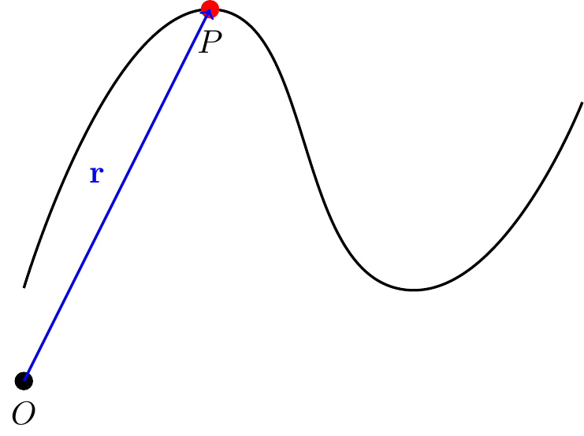
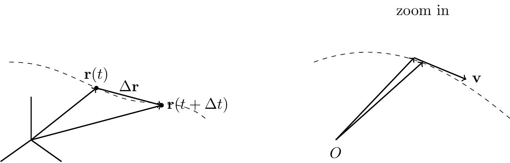

7 Particle Kinematics
7.1 Position, Velocity, and Acceleration
Consider a particle moving in \(\mathbb{E}^3\). Its position vector relative to a fixed origin \(O\) is denoted by \({\bf r} \in \mathbb{E}^3\). As time \(t\) evolves, so does \({\bf r}(t)\).
Let \(\Delta t\) be a finite time elapsed: \[\begin{align} \Delta{\bf r} = {\bf r}(t+\Delta t)-{\bf r}(t). \end{align}\] As \(\Delta t \rightarrow 0\), \(\Delta t\) becomes \(dt\) and \(\Delta {\bf r}\) becomes \(d{\bf r}\).

The (absolute) velocity vector \({\bf v}\) of the particle is the time rate of change of the position vector: \[\begin{align} {\bf v} = \frac{d{\bf r}}{dt}=\dot{\bf r} = \lim_{\Delta t \rightarrow 0}\frac{{\bf r}(t+\Delta t)-{\bf r}(t)}{\Delta t}. \end{align}\]
TipThink!
Question: What is the direction of the velocity vector?
NoteAnswer
\({\bf v}\) is along \(d{\bf r}\) which is always tangent to the path.
The speed of the particle is the magnitude of the velocity vector \(v = \lnorm{\bf v}\rnorm\).
The (absolute) acceleration is \[\begin{align} {\bf a} = \frac{d{\bf v}}{dt} = \dot{\bf v} = \ddot{\bf r} = \frac{d^2{\bf r}}{dt^2}. \end{align}\]
7.2 Arc-Length and the Unit Tangent Vector
Define the arc-length parameter \(s\) such that \[\begin{align} \frac{ds}{dt} = \lnorm {\bf v}\rnorm. \end{align}\]
\(\frac{ds}{dt}\) is the speed of the particle. Recall that \({\bf v} = \frac{d{\bf r}}{dt}\), so \[\begin{align} \frac{ds}{dt} = \lnorm\frac{d{\bf r}}{dt}\rnorm. \end{align}\]
So \(ds\) is the length of the differential \(d{\bf r}\) along the curve. Integrating: \[\begin{align} s(t)-s_0 = \int_{t_0}^t\frac{ds}{dt}(\tau)d\tau = \int_{t_0}^t\sqrt{{\bf v}(\tau)\cdot{\bf v}(\tau)}\,d\tau. \end{align}\]
Notes:
- \(s(t)-s_0\) is the distance traveled by the particle along its path \(\mathcal{C}\) during the time interval \([t_0, t]\).
- \(s(t_0)=s_0\) where \(t_0\) and \(s_0\) are initial conditions.
- The dummy variable \(\tau\) is used (as opposed to \(t\)) when evaluating this integral because we are integrating the speed as it varies between \(t_0\) and \(t\).
TipThink!
Question: Under what conditions is \(s(t)\) invertible so that \(t(s)\) is well defined?
NoteAnswer
If the function \(s(t)\) is one-to-one, it can be inverted, and time can be written in terms of arc-length \(t = t(s)\).
TipThink!
Question: Why is \[\begin{align} s(t)-s_0 \neq \lnorm {\bf r}(t)-{\bf r}_0\rnorm? \end{align}\] Under what conditions does the equality hold?
NoteAnswer
The equality holds under rectilinear motion or over an infinitesimal time interval.
We define the unit tangent vector \({\bf e}_t\): \[\begin{align} \frac{\bf v}{\lnorm{\bf v}\rnorm} = {\bf e}_t, \qquad {\bf v} = \frac{d{\bf r}}{dt} = \frac{d{\bf r}}{ds}\frac{ds}{dt} = \dot{s}{\bf e}_t. \end{align}\]
TipThink!
Question: Verify that \({\bf e}_t\) is a unit vector.
NoteAnswer
…
Note the relationships \[\begin{align*} {\bf v} &= \frac{d{\bf r}(t)}{dt} = \frac{d{\bf r}}{ds}\frac{ds}{dt},\\ {\bf a} &= \frac{d{\bf v}(t)}{dt} = \frac{d^2{\bf r}}{ds^2}\lp\frac{ds}{dt}\rp^2+\frac{d{\bf r}}{ds}\frac{d^2 s}{dt^2}. \end{align*}\]
Notice: the acceleration vector is due to changes in both the magnitude and direction of the velocity vector.
TipThink!
Question: Is the unit vector \({\bf e}_t\) constant in general? Under what conditions is it constant?
NoteAnswer
No. It is constant only during rectilinear motion in a fixed direction.
7.2.1 Example
Consider a particle moving in space with position vector \[\begin{align} {\bf r}(t) = R_0\lp\cos(\omega t){\bf E}_x+\sin(\omega t){\bf E}_y\rp. \end{align}\]
Calculate and plot \({\bf v}\), \({\bf a}\), \({\bf v}\times {\bf a}\), \(\lnorm{\bf r}\rnorm\). Show that the motion satisfies: \[\begin{align} \ddot{x}+\omega^2 x=0, \qquad \ddot{y}+\omega^2 y=0. \end{align}\]
WarningExample
Question: Consider a particle \(P\) moving in \(\mathbb{E}^2\) with position vector \[\begin{align*} {\bf r} = R_0\lp\cos\lp\omega t\rp{\bf E}_x+\sin\lp\omega t\rp{\bf E}_y\rp. \end{align*}\] Calculate \({\bf r}\times{\bf a}\) and \({\bf r}\cdot{\bf a}\). Describe the motion of the particle.
NoteAnswer
The velocity and acceleration are: \[\begin{align*} {\bf v} &= R_0\omega\lp-\sin\lp\omega t\rp{\bf E}_x+\cos\lp\omega t\rp{\bf E}_y\rp,\\ {\bf a} &= -R_0\omega^2\lp\cos\lp\omega t\rp{\bf E}_x+\sin\lp\omega t\rp{\bf E}_y\rp. \end{align*}\] Note that \(\dot{\bf E}_x={\bf 0}\) and \(\dot{\bf E}_y={\bf 0}\) since the basis is fixed, and the chain rule applies.
Noting that \({\bf a} = -\omega^2{\bf r}\): \[\begin{align*} {\bf r}\times{\bf a} = {\bf r}\times(-\omega^2{\bf r}) = -\omega^2{\bf r}\times{\bf r} = {\bf 0}. \end{align*}\]
For \({\bf r}\cdot{\bf a}\): \[\begin{align*} {\bf r}\cdot{\bf a} &= -R_0^2\omega^2\lp\cos^2(\omega t)+\sin^2(\omega t)\rp = -R_0^2\omega^2. \end{align*}\]
7.3 Cartesian Coordinates
\(\{{\bf E}_x,{\bf E}_y,{\bf E}_z\}\) is a basis for \(\mathbb{E}^3\). Since this basis is fixed, we have: \[\begin{align} {\bf r} &= x{\bf E}_x+y{\bf E}_y+z{\bf E}_z,\\ {\bf v} &= \dot{x}{\bf E}_x+\dot{y}{\bf E}_y+\dot{z}{\bf E}_z,\\ {\bf a} &= \ddot{x}{\bf E}_x+\ddot{y}{\bf E}_y+\ddot{z}{\bf E}_z. \end{align}\]
Later we will also use the cylindrical polar basis \(\{{\bf e}_r,{\bf e}_\theta,{\bf E}_z\}\) and the Serret-Frenet triad \(\{{\bf e}_t,{\bf e}_n,{\bf e}_b\}\).
7.4 Rectilinear Motion
- rectus = straight, linea = line
Due to constraints or initial conditions, the body moves on a straight line, e.g. a car on a straight road or a ball tossed vertically.
We take \({\bf E}_x\) parallel to the line and \({\bf c}\) to be a constant vector. Then: \[\begin{align} {\bf r}(t) &= x(t){\bf E}_x+{\bf c},\\ {\bf v}(t) &= \dot{x}{\bf E}_x = v(t){\bf E}_x,\\ {\bf a}(t) &= \ddot{x}{\bf E}_x = a(t){\bf E}_x. \end{align}\]
\(\frac{ds}{dt}=\left|\frac{dx}{dt}\right|\), so unless \(\dot{x}>0\) or \(\dot{x}<0\) throughout, \(x\) and \(s\) cannot be easily interchanged.
7.4.1 Identities for Rectilinear Motion
Recall \(v = \frac{dx}{dt}\) and \(a = \frac{dv}{dt}\). Applying the chain rule: \[\begin{align} a = \frac{dv}{dt} = \frac{dv}{dx}\frac{dx}{dt} = v\frac{dv}{dx}. \end{align}\]
Three useful identities: \[\begin{align} ds &= v\, dt, \qquad dv = a\, dt, \qquad v\,dv = a\,ds. \end{align}\]
7.4.2 Given Acceleration as a Function of Time
From \(dv = a\, dt\): \[\begin{align} v(t)-v(t_0) = \int_{t_0}^{t}a(\tilde{t})\,d\tilde{t}. \end{align}\] From \(ds = v\, dt\): \[\begin{align} s(t_1)-s(t_0) = \int_{t_0}^{t_1}v(\tilde{t})\,d\tilde{t}. \end{align}\]
7.4.3 Given Acceleration as a Function of Speed
From \(dv = a\, dt\) with \(a = a(v)\): \[\begin{align} t(v) - t(v_0) = \int_{v_0}^{v}\frac{d\tilde{v}}{a(\tilde{v})}. \end{align}\] Using \(a = v\frac{dv}{ds}\): \[\begin{align} s(t)-s_0 = \int_{v_0}^{v}\frac{\tilde{v}\,d\tilde{v}}{a(\tilde{v})}. \end{align}\]
7.4.4 Given Acceleration as a Function of Displacement
Using \(v\,dv = a\,ds\) with \(a = a(s)\): \[\begin{align} \frac{1}{2}\lp v^2(s)-v^2(s_0)\rp = \int_{s_0}^{s}a(\tilde{s})\,d\tilde{s}. \end{align}\]
7.4.4.1 Constant Acceleration
Example: Gravity. Throw a ball up; take the hand as origin. Here \(a = -g\).
\[\begin{align} v(t) &= v_0-gt,\\ s(t) &= s_0+v_0t-\frac{g}{2}t^2. \end{align}\]
Example: Vehicle Braking. Using \(v\,dv = a\,ds\): \[\begin{align} v^2(s)-v^2(s_0) = 2a\,\Delta s. \end{align}\]
7.5 Summary
Kinematics in Cartesian coordinates: \[\begin{align} \mathbf{r} &= x\mathbf{E}_x + y\mathbf{E}_y + z\mathbf{E}_z, \\ \mathbf{v} &= \dot{x}\mathbf{E}_x + \dot{y}\mathbf{E}_y + \dot{z}\mathbf{E}_z, \\ \mathbf{a} &= \ddot{x}\mathbf{E}_x + \ddot{y}\mathbf{E}_y + \ddot{z}\mathbf{E}_z. \end{align}\]
Rectilinear motion (along \(\mathbf{E}_x\)): \(\mathbf{r}=x\mathbf{E}_x\), \(\mathbf{v}=\dot{x}\mathbf{E}_x\), \(\mathbf{a}=\ddot{x}\mathbf{E}_x\), and \(a = v\,dv/dx\).
7.6 Exercises
The following problems are from Set 03 – Rectilinear Motion.
1. [MKB 2/24] Solve \(a(x)\) as a piecewise function. (ans. \(v = 8\) ft/sec)
2. [MKB 2/28] Take \(\mathbf{E}_x\) along the horizontal; origin at the location of the plane when the parachute deploys (\(v=200\) mi/hr). Convert mi to ft and hr to sec. (ans. \(s = 5810\) ft)
3. [MKB 2/25] Take \(\mathbf{E}_y\) vertically upwards; origin at the initial position of the rocket. The acceleration is \[\begin{align} a = \begin{cases} 3 \text{ m/s}^2 & 0\le t < 8\,\text{s} \\ -9.81 \text{ m/s}^2 & 8\,\text{s}\le t < t_{\mathrm{top}} \\ 0 & t_{\mathrm{top}} < t \le t_{\mathrm{end}} \end{cases} \end{align}\] (ans. \(h = 125.4\) m, total time \(= 157.9\) s)
4. [MKB 2/22] (See problem set for figure.)